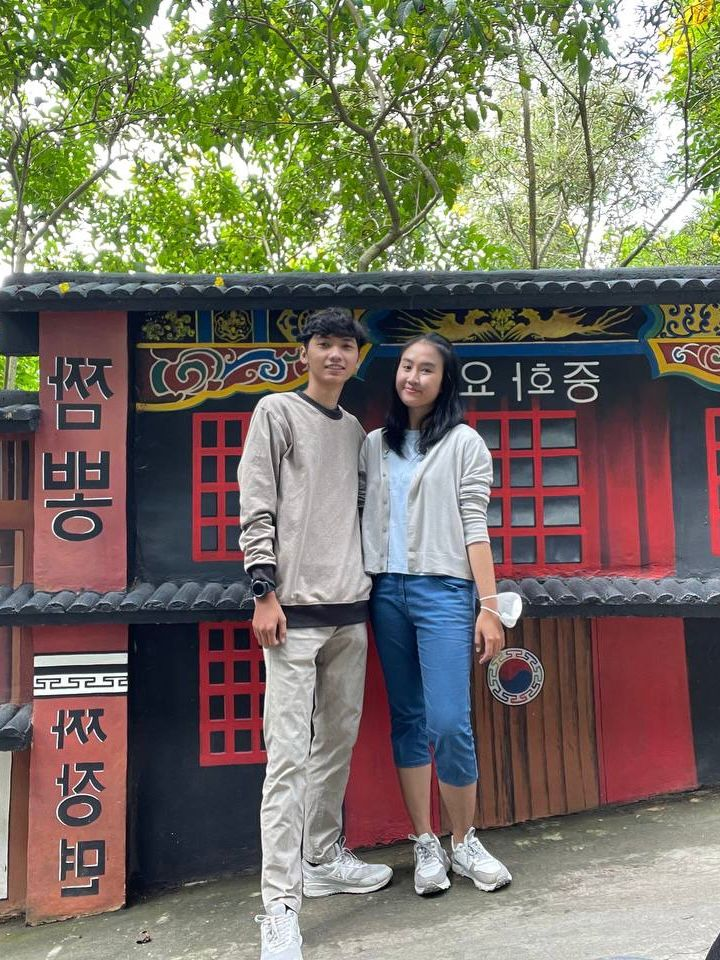
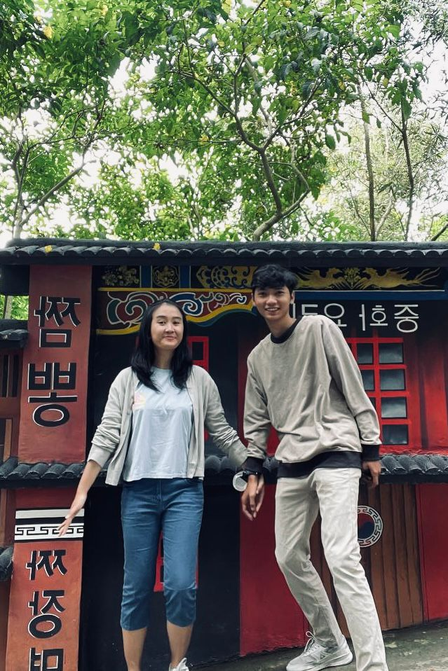

But ours is my absolute favorite.


What began as simple office banter and jokes from our colleagues turned into something very real. I never imagined that their teasing would become the beautiful beginning of our journey together.
From late-night messages that made me smile at my screen, to finally gathering the courage to ask you out. Those early moments are tucked away safely in my heart, and I cherish them every single day.
Who would have thought that office joke would lead us here? Watching you grow and laughing by your side is my greatest happiness. I can't wait to spend the rest of my "forevers" with you.
To my best partner, my number one supporter, and my favorite person in the whole world.
I Love You, Forever